עבודות.
סרטים, דמויות, מוזיקה ואתרים שנוצרו עם AI, בבימוי של בריל.
סרטים.
פרסומות, קליפים ושלוש השתתפויות בתחרות הסרטים Gen48. הקליפים כאן שקטים וקצרים, כמה שניות מכל סרט.

מושן.
סרטים שנבנים מקוד. כל תנועה, חומר וצליל מוגדרים בתוכנה, ואפשר לשנות כל אחד מהם ולרנדר מחדש.
connecting the dots
סרט מותג של 15 שניות ל־brill.ai, שנבנה פרוצדורלית ב־Blender. מערכת אחת של כדורים עוברת מאשכול לצמה, לטבעת, למערבולת ולמסלול. בסוף נשאר כדור טרקוטה אחד, שנוחת כנקודה של brill.ai וסוגר את הסרט.
החומרים הם חימר שרוף, גיר, זית, אבן גיר כחולה, פורצלן וזכוכית. הפסקול מקורי ומסונתז בקוד.
דמויות.
ב־Lumagica כל דמות נבנתה בגרידים ממוספרים, עד שננעלה בגיליון שמראה אותה מכל הזוויות.

Komi
פוסטרים וסרטונים אישיים לעשרות אנשים, כל אחד בדמות משלו.
מוזיקה.
שירים ב־Suno מאז 2024, עם מילים ועטיפה לכל שיר. מכל שיר כאן קטע של 30 שניות.
-
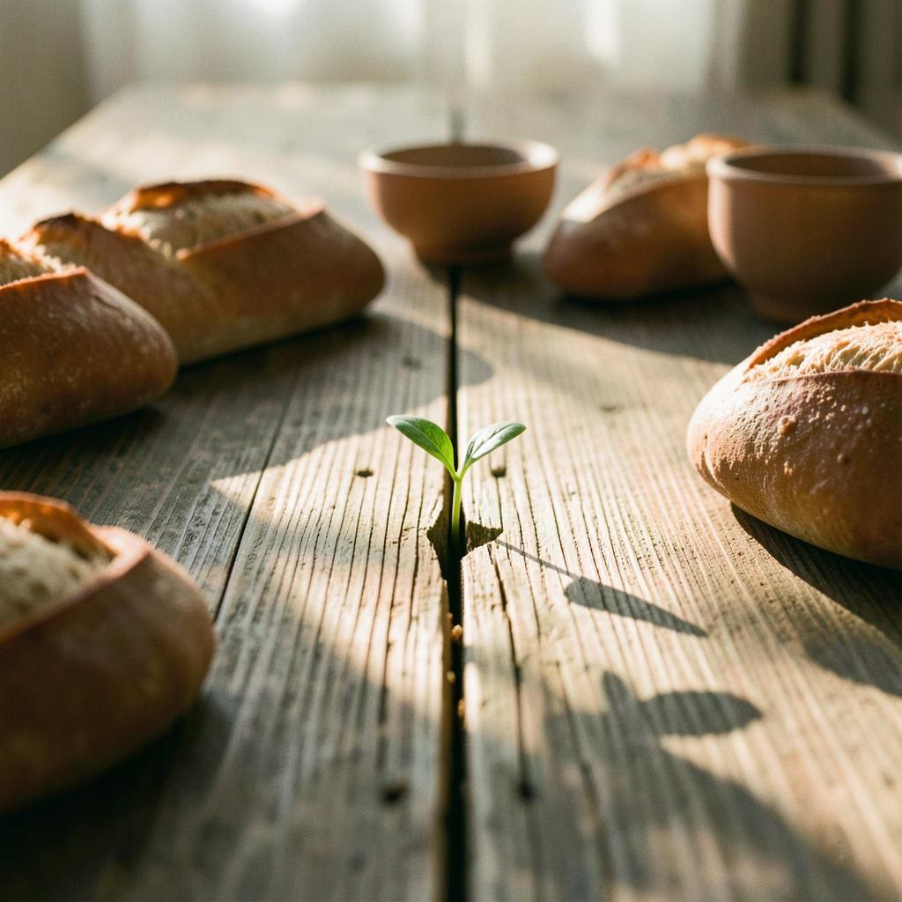
The Table Without Flags
-
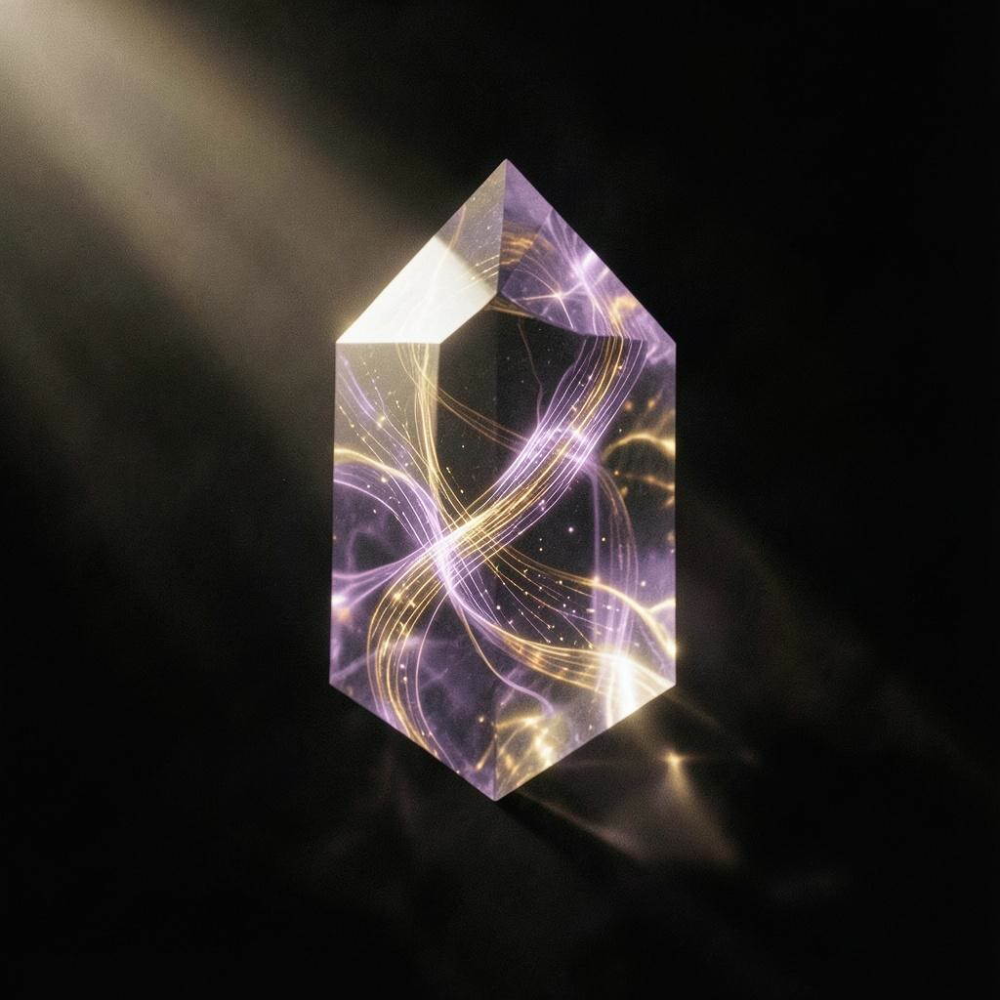
Dream Syntax
-
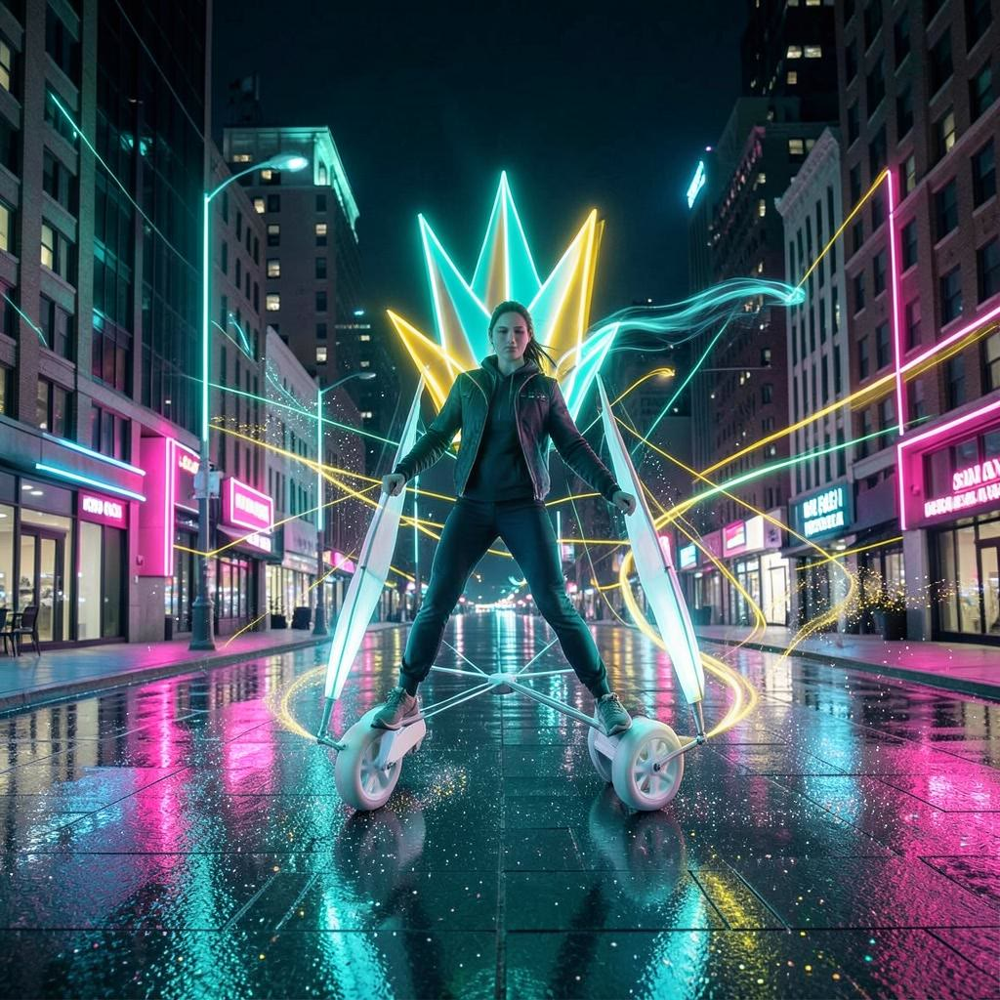
Wind-Walker
-
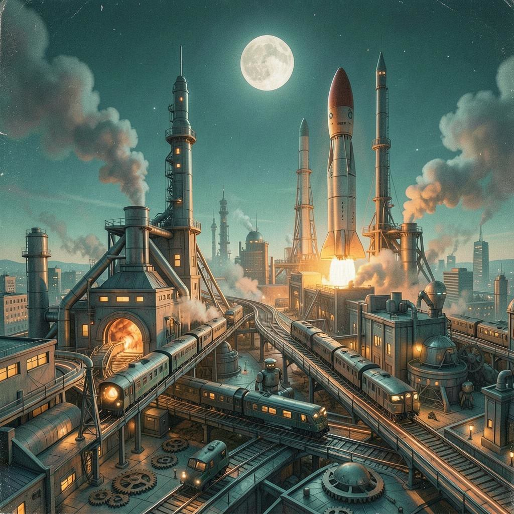
The Factory Must Grow
-
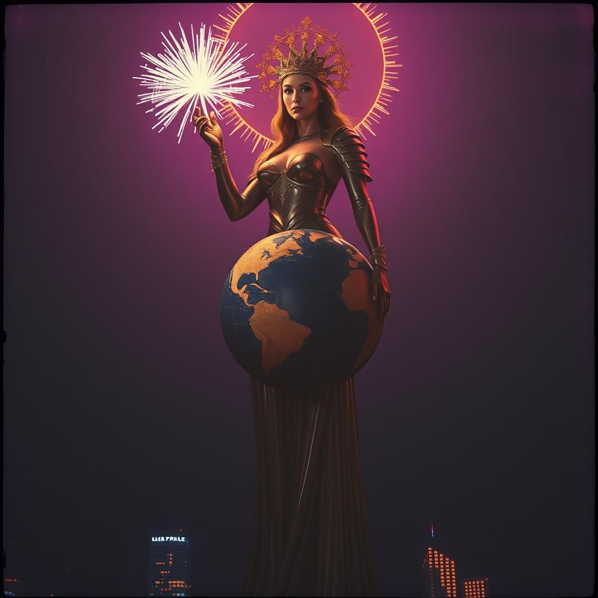
Atlas Girl
-
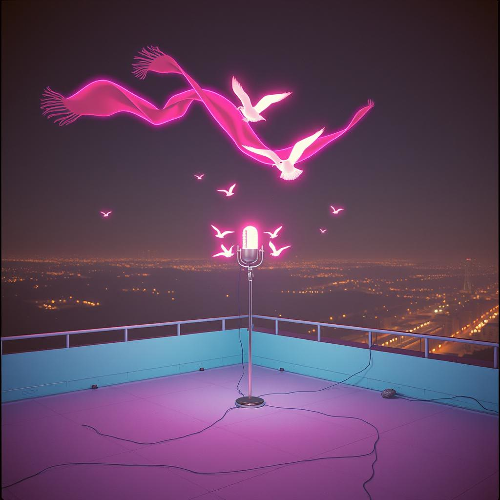
עָף לִי הַסְּכָךְ
-
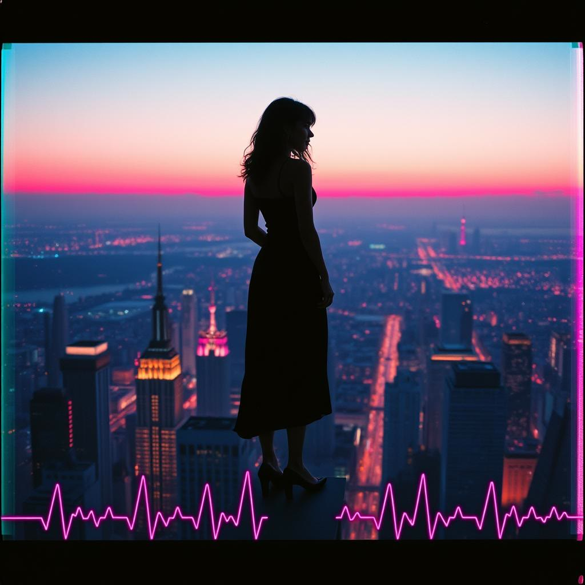
Not too high, yet over all
-
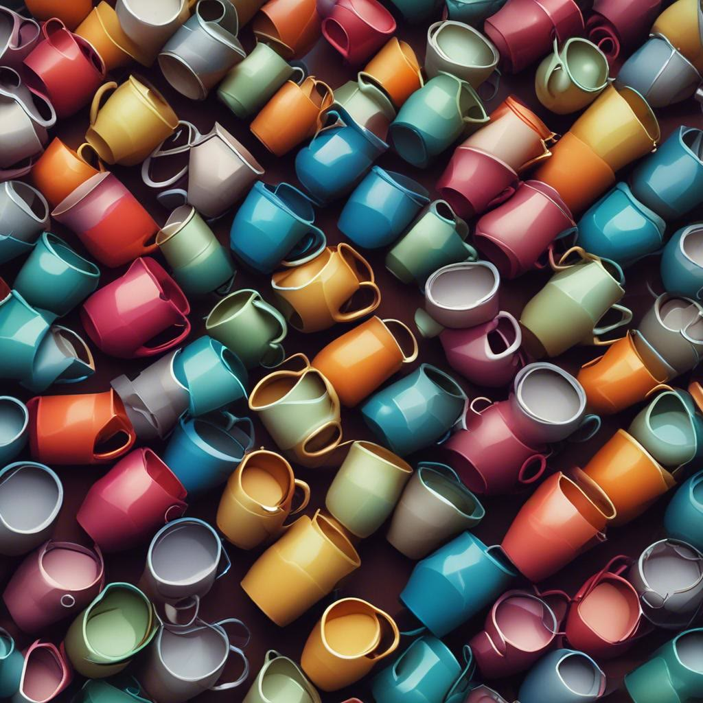
Coffee Chameleon
אתרים.
אתרים וכלים שנבנו בעבודה משותפת עם מודלי קוד, מהמחברת של ההפקה ועד מערכת ההזמנות של בית בריל.
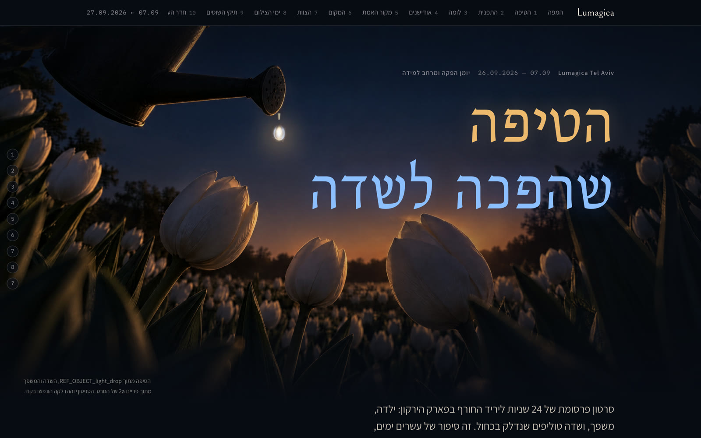
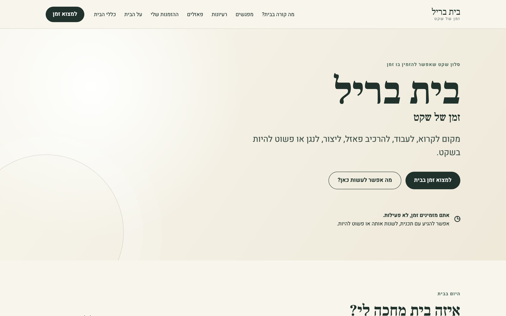
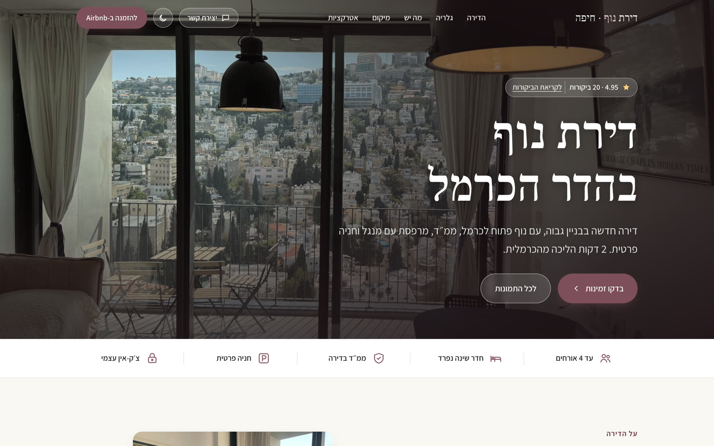
יש לכם אירוע שצריך סרט?
סרטי פרסומת, סרטי מאחורי הקלעים, סדנאות והרצאות על יצירה עם AI.
opolit@gmail.com 052-391-9350